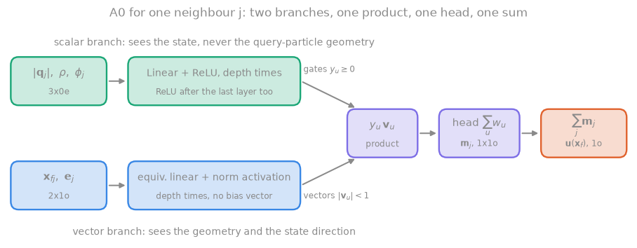
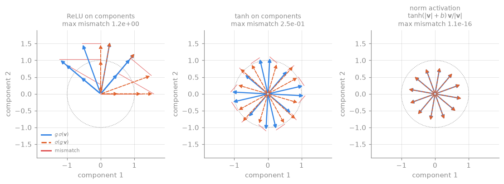
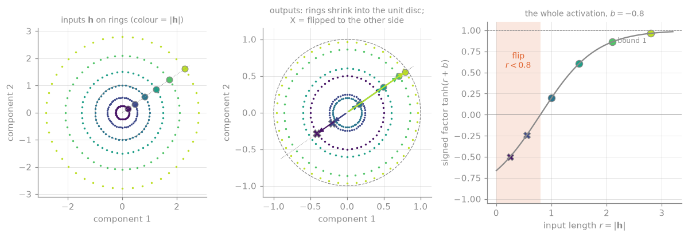
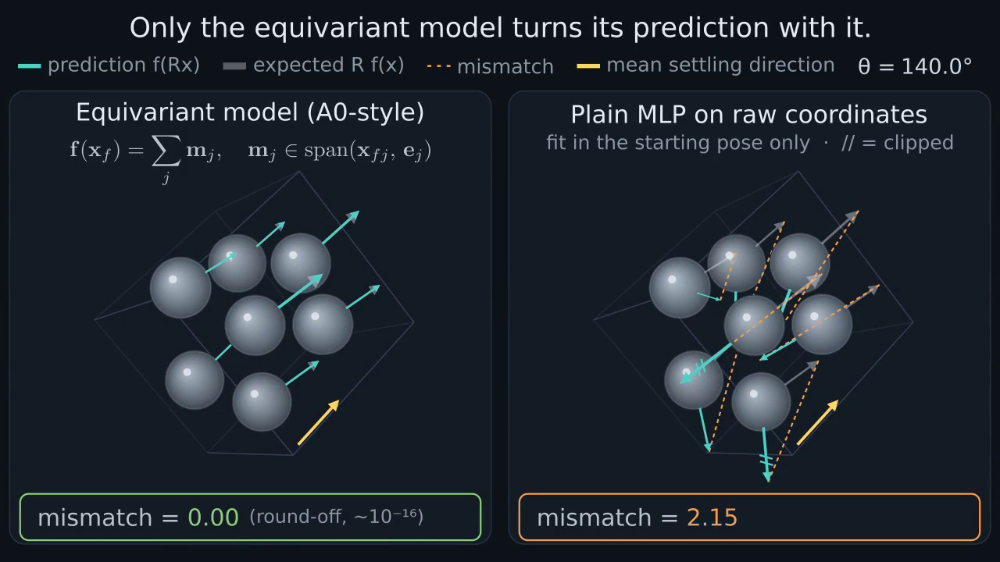
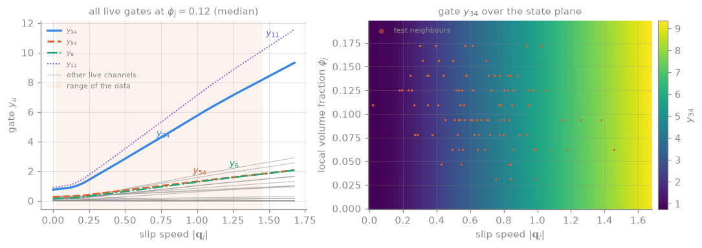
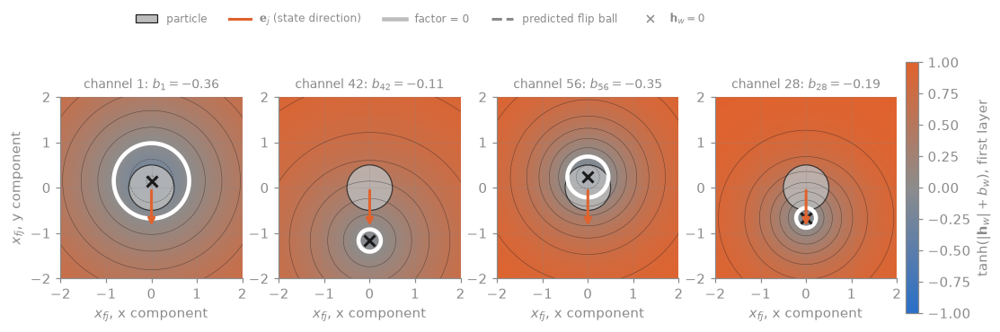
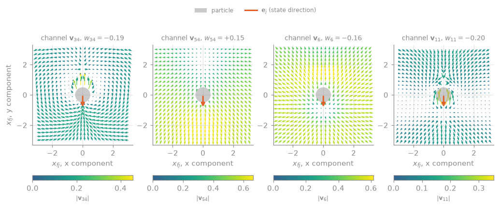
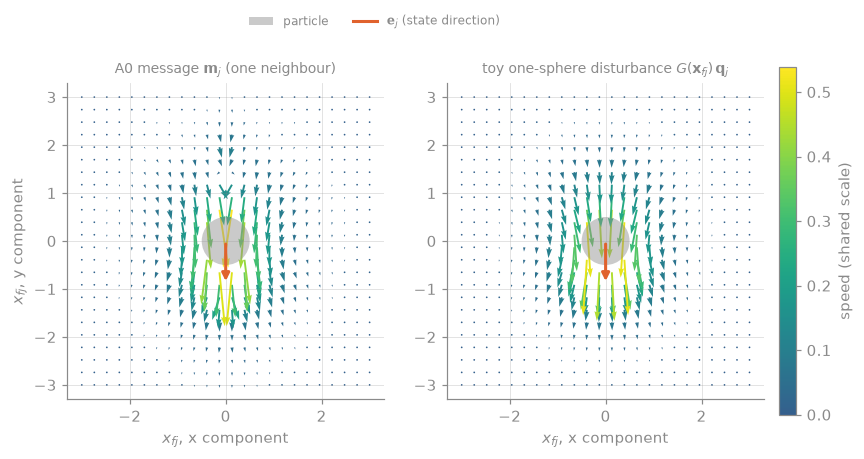
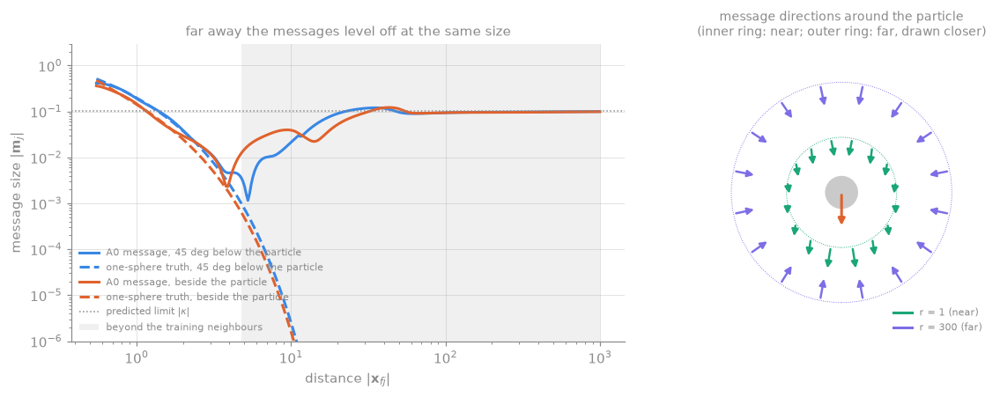
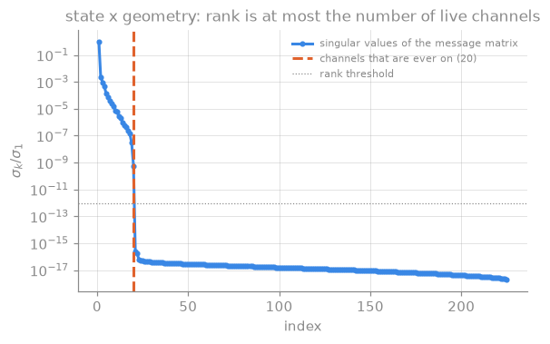

Scalar and vector branches#
What you will learn
What each of A0’s two branches sees. The scalar branch never sees where the query point is relative to the particle. Distance and angle enter only through the vector branch.
How to write the scalar branch by hand, why it is invariant, and why the ReLU after its last layer is a design choice (it makes every channel a gate \(y_u \ge 0\)), not a symmetry requirement.
Why ReLU or tanh applied to vector components breaks equivariance, and how an equivariant linear layer followed by a norm activation fixes it while keeping every length below 1.
How the channel-wise product, the linear head and the sum over neighbours put the two halves together, with a float64 check of the symmetry type of every block.
How to read a trained A0: gate maps over the state, channel vector fields around a particle, what happens far from the particle, and why every message is a sum of \(C\) separable terms.
Prerequisites: Lesson 02a, which builds the inputs and gives an overview of A0. For irreps, equivariant linear layers and norm activations, see MolSSI 02a and 04 [The Molecular Sciences Software Institute (MolSSI), 2024].
In Lesson 02a we used course_utils.models.MiniA0 as a black box with four steps. Here we open each step,
write it by hand in a few lines of PyTorch, compare it with MiniA0 to round-off, and check its symmetry type.
Lesson 02c then proves the span property, and Lesson 02d
matches the e3nn modules of the repository’s src/u1_e3nn_no_pressure.py line by line.
import time
import numpy as np
import torch
import matplotlib.pyplot as plt
from matplotlib.patches import FancyBboxPatch, Circle
from course_utils import toy_data as td
from course_utils.equivariance import (apply, check_equivariance, check_invariance, check_permutation,
random_o3, report)
from course_utils.models import MiniA0
from course_utils.plotting import PALETTE, INK, CMAP_SEQUENTIAL
t_start = time.time()
torch.set_num_threads(min(4, torch.get_num_threads()))
KINDS = ("scalar", "vector", "vector") # argument types of every model: (scalars, e_j, x_fj)
CHECKS = [] # (block, claimed type, error): the table in Section 4
1. Two branches that never see each other’s inputs#
For each query point \(\mathbf x_f\) and each of its \(M\) nearest particles \(j\), A0 receives three scalars and two vectors (Lesson 02a). It splits them between two branches:
branch |
sees |
input type |
output |
output type |
|---|---|---|---|---|
scalar |
\(\mathbf s_j = [\lvert\mathbf q_j\rvert, \rho, \phi_j]\): slip speed, density ratio, local volume fraction |
|
gates \(y_u\), \(u = 1\dots C\) |
|
vector |
\(\mathbf x_{fj}\) (offset) and \(\mathbf e_j\) (state direction) |
|
channel vectors \(\mathbf v_u\) |
|
The two branches meet exactly once, in a channel-wise product, and a linear head then mixes the channels:
Here \(w_u\) is the effective head weight: it already contains e3nn’s normalisation factor \(C^{-1/2}\) (Section 4.1 writes it as \(w_u = C^{-1/2}W^{\text{head}}_u\) with the raw parameter \(W^{\text{head}}_u\)). Lesson 02a writes the same sum with the raw weights and the factor \(C^{-1/2}\) outside, so its \(w_u\) is our \(W^{\text{head}}_u\). Every \(w_u\) printed in this lesson is the effective one.
Read the formula as a recipe. The vector branch draws \(C\) arrows from the neighbour’s geometry. The scalar branch decides, from the neighbour’s state alone, how loudly each arrow speaks. The head adds them with fixed signed weights \(w_u\). Two facts follow immediately:
The scalar branch never sees the pair geometry. Its volume fraction \(\phi_j\) is itself geometric (it is built from the positions of \(j\)’s own neighbours), but the branch never sees where the query point is relative to the particle: not the offset \(\mathbf x_{fj}\), not the distance \(\lvert\mathbf x_{fj}\rvert\), not the angle between \(\mathbf x_{fj}\) and \(\mathbf e_j\). All of that enters through the vector branch, through the lengths inside its activations.
The vector branch is blind to the state’s size. It sees the direction \(\mathbf e_j\), but not \(\lvert\mathbf q_j\rvert\) or \(\phi_j\).
On the toy, the density ratio \(\rho\) is the same in every snapshot, so it acts as a constant input. In the research model \(\rho\) is an input because it can differ between simulations.

We work with a seeded, untrained MiniA0 in float64 for the identities and checks, and with real toy inputs: 200
query points in one snapshot, \(M = 16\) neighbours each, and the toy’s exact slip as the state.
snap = cu.make_snapshot(seed=0)
q = snap.slip
pts = snap.sample_exterior(200, rng=np.random.default_rng(1))
M = 16
inp = cu.neighbour_inputs(pts, snap.positions, q, snap.phi_local, snap.density_ratio, M)
S, E, X = inp["scalars"], inp["e_j"], inp["x_fj"] # (200, 16, 3) each, float64
print("density ratio in this snapshot:", snap.density_ratio, "| distinct values in S[..., 1]:",
torch.unique(S[..., 1]).tolist())
torch.manual_seed(0)
C, depth = 16, 2
a0 = MiniA0(width=C, depth=depth).double()
print(a0)
density ratio in this snapshot: 2.0 | distinct values in S[..., 1]: [2.0]
MiniA0(
(lyr_list1): ModuleList(
(0): Linear(in_features=3, out_features=16, bias=True)
(1): Linear(in_features=16, out_features=16, bias=True)
)
(lyr_list2): ModuleList(
(0-1): 2 x _VecLayer(
(lin): _E3Linear()
(non_lin): _NormAct()
)
)
(final_lin_vec): _E3Linear()
)
2. The scalar branch#
2.1 Equations and code#
The scalar branch is an ordinary multilayer perceptron with a ReLU after every layer, including the last:
Here \(A_l\) and \(\mathbf c_l\) are the weights and biases of torch.nn.Linear, and \(L\) is the depth. We write it
out and compare with MiniA0.scalar_branch, reading the weights straight from the model:
def scalar_branch_hand(s, layers, last_relu=True):
"""s (..., 3) -> gates (..., C). layers: list of (A, c) with A (C_out, C_in)."""
y = s
for l, (A, c) in enumerate(layers):
y = y @ A.T + c
if last_relu or l < len(layers) - 1:
y = torch.relu(y)
return y
sc_layers = [(lyr.weight.detach(), lyr.bias.detach()) for lyr in a0.lyr_list1]
with torch.no_grad():
y_lib = a0.scalar_branch(S)
y_hand = scalar_branch_hand(S, sc_layers)
print(report("scalar branch by hand vs MiniA0.scalar_branch", float((y_hand - y_lib).abs().max()), 1e-12))
print("gates shape", tuple(y_hand.shape), "| smallest gate", float(y_hand.min()))
PASS scalar branch by hand vs MiniA0.scalar_branch: max error 0.0e+00 (tol 1e-12)
gates shape (200, 16, 16) | smallest gate 0.0
2.2 Invariant because its inputs are#
Each input scalar is invariant under rotations and reflections, so any function of them is invariant too. That
argument is easy, which makes it easy to fool yourself. A test on the pre-built scalars S would only show that
the function does not look at E and X. The meaningful test starts from the raw data: query points,
particle centres and states. We build the inputs from scratch, including the local volume fraction
\(\phi_j\) recomputed from the transformed centres, and feed them to the scalar branch:
cfg = snap.config
def gates_from_raw(points, positions, states):
phi = td.local_volume_fraction(positions, cfg.radius, cfg.phi_radius)
s = cu.neighbour_inputs(points, positions, states, phi, snap.density_ratio, M)["scalars"]
return a0.scalar_branch(s)
err = check_invariance(gates_from_raw, (pts, snap.positions, q), ("vector", "vector", "vector"),
name="gates y_u from raw (points, centres, states)")
CHECKS.append(("scalar branch y_u (from raw data)", "0e, invariant", err))
PASS gates y_u from raw (points, centres, states): max error 1.1e-16 (tol 1e-12) [5 random g in O(3), det = [-1, 1]]
2.3 Failure first? The last ReLU is not about symmetry#
Most MLPs end with a plain linear layer. A0’s scalar branch ends with a ReLU. Is that needed for the symmetry? Remove it and run the same check:
def gates_no_last_relu(points, positions, states):
phi = td.local_volume_fraction(positions, cfg.radius, cfg.phi_radius)
s = cu.neighbour_inputs(points, positions, states, phi, snap.density_ratio, M)["scalars"]
return scalar_branch_hand(s, sc_layers, last_relu=False)
check_invariance(gates_no_last_relu, (pts, snap.positions, q), ("vector", "vector", "vector"),
name="gates without the last ReLU");
y_free = scalar_branch_hand(S, sc_layers, last_relu=False)
print(f"without the last ReLU: {float((y_free < 0).double().mean()):.0%} of the outputs are negative")
PASS gates without the last ReLU: max error 1.7e-16 (tol 1e-12) [5 random g in O(3), det = [-1, 1]]
without the last ReLU: 53% of the outputs are negative
It passes. Any function of invariants is invariant, with or without a final ReLU. So this is not a failure, and it is worth being clear about that: the last ReLU is a modelling choice. What it buys is a clean division of labour:
\(y_u \ge 0\), so the state can turn a channel up, down or off, but it can never reverse it. We call \(y_u\) a gate.
Only two things can reverse channel \(u\)’s contribution: the fixed sign of the head weight \(w_u\), and the geometry, through the sign of the tanh in the vector branch (Section 3.3).
A ReLU also outputs exact zeros. For a given state, some channels are silent. Section 5.1 maps where each gate of a trained model is on and off.
zero_frac = float((y_hand == 0).double().mean())
always_off = int(((y_hand == 0).all(dim=0).all(dim=0)).sum())
print(f"untrained A0: {zero_frac:.0%} of all gate values are exactly 0; "
f"{always_off} of {C} channels are 0 for every one of the {S.shape[0] * S.shape[1]} neighbours")
untrained A0: 53% of all gate values are exactly 0; 8 of 16 channels are 0 for every one of the 3200 neighbours
3. The vector branch#
3.1 Failure first: activations that act on components#
A nonlinearity for vectors must commute with every \(g\in O(3)\): applying \(g\) and then the activation must give the same result as the activation and then \(g\). The usual activations act on each Cartesian component separately, and components are not invariant. They depend on how the axes are oriented.
The figure shows this in a plane. Twelve vectors on a ring are rotated by \(g\) (a 50° turn). Solid arrows show “activate, then rotate”, \(g\,\sigma(\mathbf v)\). Dashed arrows show “rotate, then activate”, \(\sigma(g\mathbf v)\). For an equivariant \(\sigma\) the two coincide.

The component ReLU throws away everything outside one quadrant, and which quadrant that is depends on the axes. The component tanh squashes a vector along the axes into a rounded square, not a circle. The norm activation only changes each vector’s length, by an amount that depends only on the length, so the two paths agree. The dotted circle is radius 1: every norm-activated vector lies inside it.
Now the same three failures in 3D, as numerical checks. We write one vector layer by hand with a switch for the
activation, and with an optional bias vector added after the linear map. Vectors are stored as
(..., C, 3): channels, then the three Cartesian components.
def equi_linear(v, W):
"""o3.Linear on C_in x 1o -> C_out x 1o. v (..., C_in, 3), W (C_in, C_out)."""
return torch.einsum("...ui,uw->...wi", v, W) / W.shape[0] ** 0.5
def norm_act(h, b, eps=1e-6):
"""tanh(|h| + b) h / |h| per channel, with e3nn's clamp |h| >= eps."""
r = torch.sqrt(torch.clamp_min(h.square().sum(-1, keepdim=True), eps * eps))
return torch.tanh(r + b[:, None]) * h / r
def vec_layer(v, W, b, act="norm", bias_vec=None):
h = equi_linear(v, W)
if bias_vec is not None:
h = h + bias_vec # a fixed vector per channel
if act == "norm":
return norm_act(h, b)
if act == "relu":
return torch.relu(h) # ReLU on each component
if act == "tanh":
return torch.tanh(h + b[:, None]) # tanh on each component
def first_input(e, x):
return torch.stack((x, e), -2) # (..., 2, 3): channel 0 = x_fj, channel 1 = e_j
torch.manual_seed(1)
W0, b0 = torch.randn(2, C, dtype=torch.float64), 0.5 * torch.randn(C, dtype=torch.float64)
bias_vec = 0.3 * torch.randn(C, 3, dtype=torch.float64)
broken = {"ReLU on components": dict(act="relu"),
"tanh on components": dict(act="tanh"),
"bias vector, then norm activation": dict(act="norm", bias_vec=bias_vec)}
for name, kw in broken.items():
try:
check_equivariance(lambda e, x: vec_layer(first_input(e, x), W0, b0, **kw), (E, X),
("vector", "vector"), name=name)
except AssertionError as err:
print("caught:", err)
check_equivariance(lambda e, x: vec_layer(first_input(e, x), W0, b0), (E, X), ("vector", "vector"),
name="equivariant linear + norm activation");
FAIL ReLU on components: max error 1.1e+00 (tol 1e-12) [5 random g in O(3), det = [-1, 1]]
caught: ReLU on components: equivariance error 1.145e+00 >= tol 1.0e-12
FAIL tanh on components: max error 2.0e+00 (tol 1e-12) [5 random g in O(3), det = [-1, 1]]
caught: tanh on components: equivariance error 2.035e+00 >= tol 1.0e-12
FAIL bias vector, then norm activation: max error 1.6e+00 (tol 1e-12) [5 random g in O(3), det = [-1, 1]]
caught: bias vector, then norm activation: equivariance error 1.647e+00 >= tol 1.0e-12
PASS equivariant linear + norm activation: max error 1.2e-15 (tol 1e-12) [5 random g in O(3), det = [-1, 1]]
The errors are of order one for all three broken layers. A bias vector fails for a different reason from the two activations: it is a fixed arrow, a preferred direction in space, and \(g\) does not move it. Lesson 02d (Section 4.1) shows the same failure on the whole model. The last layer passes.
3.2 The equivariant linear layer#
The linear part mixes channels, never components:
Why this commutes with \(g\), in one line: stack the channels as the columns of a \(3\times C_{\text{in}}\) matrix \(V\). Then the layer is \(V \mapsto VW\) and the group acts as \(V\mapsto gV\). Matrix products are associative, so \((gV)W = g(VW)\): \(g\) acts on the left (components), \(W\) on the right (channels), and they never touch. A bias vector is a fixed \(3\times C\) matrix added after the product. It does not transform, and the identity breaks.
The factor \(C_{\text{in}}^{-1/2}\) is e3nn’s normalisation: with unit-variance weights, \(\mathbf h_w\) has about the same size as each \(\mathbf v_u\). In the first layer, \(C_{\text{in}} = 2\) and the two input channels are \(\mathbf x_{fj}\) and \(\mathbf e_j\), in that order. So each first-layer channel is \(\mathbf h_w = (W_{0w}\mathbf x_{fj} + W_{1w}\mathbf e_j)/\sqrt 2\), an arrow in the plane of the two inputs. Lesson 02c follows this plane through the whole network.
We check the hand-written layer against MiniA0’s first layer, whose matrix() already includes
\(C_{\text{in}}^{-1/2}\):
lin0 = a0.lyr_list2[0].lin
W_first = lin0.weight.detach().view(lin0.mul_in, lin0.mul_out) # raw weights, (2, C)
v_in = first_input(E, X)
h_hand = equi_linear(v_in, W_first)
h_lib = torch.einsum("bmui,uw->bmwi", v_in, lin0.matrix().detach())
print(report("equivariant linear by hand vs MiniA0 (first layer)", float((h_hand - h_lib).abs().max()), 1e-12))
err = check_equivariance(lambda e, x: equi_linear(first_input(e, x), W_first), (E, X), ("vector", "vector"),
name="equivariant linear, first layer")
CHECKS.append(("equivariant linear (layer 1)", "1o, equivariant", err))
PASS equivariant linear by hand vs MiniA0 (first layer): max error 1.8e-15 (tol 1e-12)
PASS equivariant linear, first layer: max error 4.5e-16 (tol 1e-12) [5 random g in O(3), det = [-1, 1]]
3.3 The norm activation: keep the line, squash the length#
For each channel the norm activation replaces the length of \(\mathbf h_w\) and keeps its line:
It is equivariant because \(\lvert g\mathbf h\rvert = \lvert\mathbf h\rvert\): the factor in front is an invariant number, and an invariant number times an equivariant vector is equivariant. Three properties matter for A0:
Bounded. \(\lvert\mathbf v_w\rvert = \lvert\tanh(\cdot)\rvert < 1\), however large the input. No channel can blow up, even for a neighbour far away.
Sign flips. The bias \(b_w\) is learned and may be negative. When \(\lvert\mathbf h_w\rvert < -b_w\), the factor is negative and the arrow points the other way along the same line. Here geometry can reverse a channel, which the gates of Section 2 cannot.
Distance and angle enter here. In the first layer \(\mathbf h_w = (W_{0w}\mathbf x_{fj} + W_{1w}\mathbf e_j)/\sqrt2\) (Section 3.2). Write \(r = \lvert\mathbf x_{fj}\rvert\) and \(\theta\) for the angle between \(\mathbf x_{fj}\) and the unit vector \(\mathbf e_j\). Expanding the square gives
\[ 2\,\lvert\mathbf h_w\rvert^2 \;=\; W_{0w}^2\,r^2 \;+\; W_{1w}^2 \;+\; 2\,W_{0w}W_{1w}\,r\cos\theta . \]So the first-layer factor \(\tanh(\lvert\mathbf h_w\rvert + b_w)\) is a nonlinear function of exactly the two pair invariants, distance and angle. This is the only place in A0 where such a function is formed.
The formula also tells us where a first-layer channel with \(b_w < 0\) flips. The condition \(\lvert\mathbf h_w\rvert < -b_w\) reads \(\lvert\mathbf x_{fj} + (W_{1w}/W_{0w})\,\mathbf e_j\rvert < \sqrt2\,\lvert b_w\rvert/\lvert W_{0w}\rvert\): a ball of radius \(\sqrt2\lvert b_w\rvert/\lvert W_{0w}\rvert\) centred at \(-(W_{1w}/W_{0w})\,\mathbf e_j\), on the line through the particle along \(\mathbf e_j\). At the centre of the ball \(\mathbf h_w = \mathbf 0\), so the channel’s direction is undefined there: since \(\tanh(0 + b_w) \neq 0\), the arrow keeps a length of about \(\lvert\tanh b_w\rvert\) and reverses as \(\mathbf x_{fj}\) passes through the centre. Section 5.2 draws these balls for a trained model.
Lesson 02d compares the norm activation with e3nn’s NormActivation module. Here we check our version against
MiniA0 layer by layer, check each layer’s equivariance, and then run the whole stack:
vec_params = [(l.lin.weight.detach().view(l.lin.mul_in, l.lin.mul_out), l.non_lin.biases.detach())
for l in a0.lyr_list2]
def vector_branch_hand(e, x, params=vec_params):
v = first_input(e, x)
for W, b in params:
v = vec_layer(v, W, b)
return v # (..., C, 3)
v_cur = first_input(E, X)
for k, (W, b) in enumerate(vec_params):
lyr = a0.lyr_list2[k]
with torch.no_grad(): # MiniA0 layers use the (3, rows, C) layout
v_lib = lyr(v_cur.permute(3, 0, 1, 2).reshape(3, -1, W.shape[0])).reshape(3, *v_cur.shape[:2], -1)
v_next = vec_layer(v_cur, W, b)
print(report(f"vector layer {k + 1} by hand vs MiniA0", float((v_next - v_lib.permute(1, 2, 3, 0)).abs().max()),
1e-12))
err = check_equivariance(lambda vv, W=W, b=b: vec_layer(vv, W, b), (v_cur,), ("vector",),
name=f"vector layer {k + 1} (linear + norm activation)")
CHECKS.append((f"vector layer {k + 1}", "Cx1o, equivariant", err))
v_cur = v_next
with torch.no_grad():
v_lib_all = a0.vector_branch(E, X)
v_hand = vector_branch_hand(E, X)
print(report("whole vector branch by hand vs MiniA0.vector_branch", float((v_hand - v_lib_all).abs().max()), 1e-12))
err = check_equivariance(vector_branch_hand, (E, X), ("vector", "vector"), name="vector branch v_u")
CHECKS.append(("vector branch v_u", "Cx1o, equivariant", err))
print(f"largest |v_u| over all channels and neighbours: {float(v_hand.norm(dim=-1).max()):.6f}")
PASS vector layer 1 by hand vs MiniA0: max error 4.4e-16 (tol 1e-12)
PASS vector layer 1 (linear + norm activation): max error 7.8e-16 (tol 1e-12) [5 random g in O(3), det = [-1, 1]]
PASS vector layer 2 by hand vs MiniA0: max error 4.0e-16 (tol 1e-12)
PASS vector layer 2 (linear + norm activation): max error 6.7e-16 (tol 1e-12) [5 random g in O(3), det = [-1, 1]]
PASS whole vector branch by hand vs MiniA0.vector_branch: max error 6.7e-16 (tol 1e-12)
PASS vector branch v_u: max error 7.8e-16 (tol 1e-12) [5 random g in O(3), det = [-1, 1]]
largest |v_u| over all channels and neighbours: 0.972556
The distance-and-angle formula for the first layer, checked on every (query, neighbour, channel) of the toy inputs:
W0f, W1f = W_first[0], W_first[1] # (C,) each
r_ = X.norm(dim=-1, keepdim=True) # (200, 16, 1)
cos_ = (X * E).sum(-1, keepdim=True) / r_
h2_formula = 0.5 * (W0f**2 * r_**2 + W1f**2 + 2 * W0f * W1f * r_ * cos_)
h2_direct = h_hand.square().sum(-1) # |h_w|^2 from the layer itself
print(report("2|h_w|^2 = W0^2 r^2 + W1^2 + 2 W0 W1 r cos(theta)",
float(((h2_formula - h2_direct).abs() / h2_direct.clamp_min(1e-300)).max()), 1e-12))
PASS 2|h_w|^2 = W0^2 r^2 + W1^2 + 2 W0 W1 r cos(theta): max error 2.7e-14 (tol 1e-12)
What the norm activation does to vectors of different lengths, seen in one plane. On the left, inputs lie on rings of six radii, coloured by their length, with one marked point per ring along the same ray. In the middle, each ring’s outputs: every ring becomes a ring of radius \(\lvert\tanh(r+b)\rvert < 1\). The two short rings have \(r < -b\), so their factor is negative and they come out on the opposite side: follow the marked points. On the right, the signed factor \(\tanh(r+b)\) as a function of the input length \(r\), the whole activation in one curve.

4. Product, head and sum#
4.1 The three steps by hand#
The last three steps are short:
Product. \(g(y_u\mathbf v_u) = y_u\,(g\mathbf v_u)\), because \(y_u\) does not change. An invariant times an equivariant vector is equivariant. In e3nn this is an
ElementwiseTensorProduct0e x 1o. Its constant is 1 (Lesson 02d, Section 3.2 shows the two \(\sqrt3\) factors that cancel), so plain code writesy * v.Head. An equivariant linear layer from \(C\) channels to one, exactly the layer of Section 3.2, with no activation. Its raw parameters are \(W^{\text{head}}_u\), and the effective weights of Section 1 are \(w_u = C^{-1/2}W^{\text{head}}_u\). The code reads them from
matrix(), which includes the factor.Sum. Adding equivariant vectors gives an equivariant vector, and a sum does not depend on the order of the neighbours (Deep Sets [Zaheer et al., 2017]).
w_head = a0.final_lin_vec.matrix().detach()[:, 0] # (C,), C^-1/2 folded in
def a0_hand(s, e, x, pieces=False):
y = scalar_branch_hand(s, sc_layers) # (..., C) gates, 0e
v = vector_branch_hand(e, x) # (..., C, 3) channel vectors, 1o
p = y[..., None] * v # (..., C, 3) product
m = torch.einsum("...ui,u->...i", p, w_head) # (..., 3) head: one message per neighbour
u = m.sum(-2) # (B, 3) sum over neighbours
return (y, v, p, m, u) if pieces else u
with torch.no_grad():
m_lib, u_lib = a0.messages(S, E, X), a0(S, E, X)
y_h, v_h, p_h, m_h, u_h = a0_hand(S, E, X, pieces=True)
print(report("messages by hand vs MiniA0.messages", float((m_h - m_lib).abs().max()), 1e-12))
print(report("output by hand vs MiniA0.forward", float((u_h - u_lib).abs().max()), 1e-12))
PASS messages by hand vs MiniA0.messages: max error 1.1e-16 (tol 1e-12)
PASS output by hand vs MiniA0.forward: max error 2.5e-16 (tol 1e-12)
4.2 Failure first: multiplying by a number that is not a scalar#
The product is equivariant only because \(y_u\) is invariant. To see that this matters, replace the gates by something that looks like a harmless positive number: the size of the offset’s first Cartesian component, \(\lvert x_{fj,1}\rvert\). It depends on the orientation of the axes.
def fake_gate_product(s, e, x):
fake = x[..., :1].abs().expand(*x.shape[:-1], C) # |x_fj,1| for every channel: not invariant
return fake[..., None] * vector_branch_hand(e, x)
try:
check_equivariance(fake_gate_product, (S, E, X), KINDS, name="product with |x_fj,1| as the gate")
except AssertionError as err:
print("caught:", err)
FAIL product with |x_fj,1| as the gate: max error 9.7e-01 (tol 1e-12) [5 random g in O(3), det = [-1, 1]]
caught: product with |x_fj,1| as the gate: equivariance error 9.668e-01 >= tol 1.0e-12
Now the real blocks, each with its claimed type:
err = check_equivariance(lambda s, e, x: a0_hand(s, e, x, pieces=True)[2], (S, E, X), KINDS,
name="products y_u v_u")
CHECKS.append(("products y_u v_u", "Cx1o, equivariant", err))
err = check_equivariance(lambda s, e, x: a0_hand(s, e, x, pieces=True)[3], (S, E, X), KINDS,
name="messages m_j (after the head)")
CHECKS.append(("messages m_j", "1o, equivariant", err))
err = check_equivariance(a0_hand, (S, E, X), KINDS, name="output u")
CHECKS.append(("output u", "1o, equivariant", err))
err = check_permutation(a0_hand, (S, E, X), axis=1, name="output u (neighbour order)")
CHECKS.append(("output u", "permutation-invariant", err))
try:
check_equivariance(a0_hand, (S, E, X), KINDS, out_kind="pseudovector", name="output u as a pseudovector")
except AssertionError as err:
print("caught (expected):", err)
PASS products y_u v_u: max error 2.3e-16 (tol 1e-12) [5 random g in O(3), det = [-1, 1]]
PASS messages m_j (after the head): max error 1.2e-16 (tol 1e-12) [5 random g in O(3), det = [-1, 1]]
PASS output u: max error 3.3e-16 (tol 1e-12) [5 random g in O(3), det = [-1, 1]]
PASS output u (neighbour order): max error 1.1e-16 (tol 1e-12) [3 random permutations of axis 1 (invariant)]
FAIL output u as a pseudovector: max error 1.8e+00 (tol 1e-12) [5 random g in O(3), det = [-1, 1]]
caught (expected): output u as a pseudovector: equivariance error 1.787e+00 >= tol 1.0e-12
The output is a polar vector (1o) and fails as a pseudovector (1e), as in Lesson 02a. Here is every check of
this lesson in one table, with the error each one printed:
print(f"{'block':38s} {'claimed type':24s} {'max error':>10s}")
for block, kind, err in CHECKS:
print(f"{block:38s} {kind:24s} {err:10.1e}")
assert all(err < 1e-12 for _, _, err in CHECKS)
block claimed type max error
scalar branch y_u (from raw data) 0e, invariant 1.1e-16
equivariant linear (layer 1) 1o, equivariant 4.5e-16
vector layer 1 Cx1o, equivariant 7.8e-16
vector layer 2 Cx1o, equivariant 6.7e-16
vector branch v_u Cx1o, equivariant 7.8e-16
products y_u v_u Cx1o, equivariant 2.3e-16
messages m_j 1o, equivariant 1.2e-16
output u 1o, equivariant 3.3e-16
output u permutation-invariant 1.1e-16


Fig. 3 The block-by-block checks above end in the equivariance of the whole model, which this still from the course animation S1, equivariance shows. The whole input, positions and states, is rotated. Left: an A0-style model, whose prediction turns with the input. Right: a plain MLP on raw coordinates, fit in one pose only, whose prediction does not. The full animation, with an interactive 3D version, plays in Lesson 02a, Section 3.#
5. Inside a trained A0#
An untrained network says little about what the channels do. We train a MiniA0 on the toy with settings
that suit it: width 64, depth 3, 25 epochs, batch 64, in the backflow frame with the exact slip as the state.
The cell prints how long training took on your machine.
from course_utils.training import train, predict, split_by_snapshot
from course_utils.metrics import r2
snaps = cu.make_snapshots(6, seed0=10)
data = cu.make_dataset(snaps, n_points=1500, M=32, frame="backflow", state="true", seed=0,
dtype=torch.float32)
tr, te = split_by_snapshot(data, [0, 1, 2, 3], [4, 5])
torch.manual_seed(0)
model = MiniA0(width=64, depth=3)
t0 = time.time()
train(model, tr, epochs=25, lr=1e-3, batch=64, seed=0, verbose=False)
print(f"trained in {time.time() - t0:.0f} s | train R2 {r2(predict(model, tr), tr['y']):.3f}"
f" | test R2 {r2(predict(model, te), te['y']):.3f}")
model = model.double().eval()
Ct = model.width
St, Et, Xt = (te[k][:1000].double() for k in ("scalars", "e_j", "x_fj")) # 1000 test query points
err = check_equivariance(model, (St[:200], Et[:200], Xt[:200]), KINDS, name="trained A0 output u")
trained in 16 s | train R2 0.917 | test R2 0.921
PASS trained A0 output u: max error 6.1e-15 (tol 1e-12) [5 random g in O(3), det = [-1, 1]]
To pick channels worth looking at, we score each one by how much it contributes to the messages on these test queries, \(\lvert w_u\rvert\cdot\mathrm{mean}\big(y_u\lvert\mathbf v_u\rvert\big)\), and keep the top four.
with torch.no_grad():
yt = model.scalar_branch(St) # (B, M, C)
vt = model.vector_branch(Et, Xt) # (B, M, C, 3)
wt = model.final_lin_vec.matrix().detach()[:, 0]
score = wt.abs() * (yt * vt.norm(dim=-1)).mean(dim=(0, 1))
top = torch.argsort(score, descending=True)[:4].tolist()
print("most influential channels:", top)
print("their head weights w_u:", [f"{float(wt[u]):+.3f}" for u in top])
most influential channels: [34, 54, 6, 11]
their head weights w_u: ['-0.189', '+0.150', '-0.156', '-0.205']
5.1 Gates over the state#
The scalar branch is a function of \((\lvert\mathbf q\rvert, \rho, \phi)\) only. With \(\rho\) fixed on the toy, each gate is a map over the plane of slip speed and local volume fraction. On the left, every channel that is on somewhere is drawn as a curve against slip speed, at the median volume fraction; the four channels chosen above are highlighted with their own colour and dash pattern (two of them can nearly coincide). On the right, the most influential gate is drawn over the whole plane. The dots show where the test neighbours lie; outside that cloud the gates are extrapolating.

Most gates of this model are nearly straight ramps in the slip speed and almost ignore the volume fraction. That is the physics of the toy showing through. Its disturbance flow is exactly proportional to each particle’s slip (Lesson 01b), and \(\phi_j\) does not enter it once the slip is known. The best gates are therefore proportional to \(\lvert\mathbf q_j\rvert\), and training found that. The cell below measures it: a straight-line fit \(y_u \approx a_u\lvert\mathbf q_j\rvert + c_u\) on the test neighbours, and how much of each gate’s variation a fit that also uses \(\phi_j\) adds.
def fit_r2(features, target):
A = torch.cat([features, torch.ones_like(features[:, :1])], 1)
coef = torch.linalg.lstsq(A, target[:, None]).solution
res = target - (A @ coef)[:, 0]
return 1 - float(res.var() / target.var())
flat_s, flat_y = St.reshape(-1, 3), yt.reshape(-1, Ct)
r2_q = [fit_r2(flat_s[:, :1], flat_y[:, u]) for u in live_t]
r2_qphi = [fit_r2(flat_s[:, [0, 2]], flat_y[:, u]) for u in live_t]
print(f"{len(live_t)} live channels | straight-line fit in |q| alone: median R2 {np.median(r2_q):.3f}"
f" (worst {min(r2_q):.3f}) | adding phi raises the median to {np.median(r2_qphi):.3f}")
22 live channels | straight-line fit in |q| alone: median R2 0.996 (worst 0.086) | adding phi raises the median to 0.997
off_frac = float((yt == 0).double().mean())
dead = int((yt == 0).all(dim=0).all(dim=0).sum())
print(f"trained A0: {off_frac:.0%} of gate values on the test set are exactly 0; "
f"{dead} of {Ct} channels are off for every test neighbour")
trained A0: 75% of gate values on the test set are exactly 0; 42 of 64 channels are off for every test neighbour
A channel that is off for every input contributes nothing, and Exercise 3 asks you to confirm that its head weight can be deleted without changing a single output.
5.2 Channels as vector fields around one particle#
Now hold the state fixed and move the query point. We put one particle at the origin with state direction \(\mathbf e_j = -\hat{\mathbf y}\) (settling down) and sweep \(\mathbf x_{fj}\) over the \(x\)-\(y\) plane.
First, where distance and angle enter. Section 3.3 showed that each first-layer channel is scaled by \(\tanh(\lvert\mathbf h_w\rvert + b_w)\), a function of distance and angle only, and that it flips inside a ball centred on the line of \(\mathbf e_j\). Here are those factors for the trained model, over the plane, for the four first-layer channels whose flipped ball covers the most of the region outside the particle. Blue means the factor is negative: there the channel points against \(\mathbf h_w\). The thick white curve is where the factor is zero, the dark dashed circle on top of it is the ball predicted by the formula, and the cross marks its centre, where \(\mathbf h_w = \mathbf 0\). The thin lines are contours of the factor.
lin_t0 = model.lyr_list2[0]
Wt0 = lin_t0.lin.weight.detach().view(2, Ct) # raw first-layer weights (x_fj row, e_j row)
bt0 = lin_t0.non_lin.biases.detach()
centre = -(Wt0[1] / Wt0[0]) # ball centre, in units of e_j
radius_ball = 2 ** 0.5 * bt0.clamp_max(0).abs() / Wt0[0].abs() # zero when b_w >= 0
n_d = 241
dx, dy = np.meshgrid(np.linspace(-2, 2, n_d), np.linspace(-2, 2, n_d))
xd = torch.as_tensor(np.stack([dx, dy, np.zeros_like(dx)], -1)) # (n_d, n_d, 3)
ed = torch.tensor([0.0, -1.0, 0.0], dtype=torch.float64)
h_d = (Wt0[0, :, None] * xd[..., None, :] + Wt0[1, :, None] * ed) / 2 ** 0.5 # (n_d, n_d, C, 3)
fac_d = torch.tanh(h_d.norm(dim=-1) + bt0) # first-layer factor per channel
ext = torch.as_tensor(np.hypot(dx, dy) > cfg.radius)
inside_ball = (xd[..., None, :] - centre[:, None] * ed).norm(dim=-1) < radius_ball
cover = (inside_ball & ext[..., None]).double().mean(dim=(0, 1))
ch_flip = torch.argsort(cover, descending=True)[:4].tolist()
on_edge = ((h_d.norm(dim=-1) + bt0).abs() < 1e-9) # exclude points exactly on the boundary
mismatch = int(((fac_d < 0) != inside_ball)[~on_edge].sum())
print("first-layer channels shown:", ch_flip, "| exterior area flipped:", [f"{float(cover[w]):.1%}" for w in ch_flip])
print(f"grid points where sign(factor) disagrees with the predicted ball: {mismatch} of {fac_d.numel()}")
first-layer channels shown: [1, 42, 56, 28] | exterior area flipped: ['8.6%', '1.2%', '0.9%', '0.9%']
grid points where sign(factor) disagrees with the predicted ball: 0 of 3717184

Every map is symmetric about the line of \(\mathbf e_j\) and depends on the query point only through its distance and its angle with \(\mathbf e_j\): that is the formula of Section 3.3 drawn out. There is a simpler way to see it. Since \(\lvert\mathbf h_w\rvert = \lvert W_{0w}\rvert\,\lvert\mathbf x_{fj} + (W_{1w}/W_{0w})\mathbf e_j\rvert/\sqrt2\), each first-layer factor depends only on the distance from one point on the line of \(\mathbf e_j\), the cross. Its contours are circles around that point, and the flipped region is the innermost disc. The sign test above agrees with the predicted disc at every grid point, and the printed fractions say how much of the window outside the particle each disc covers. Parts of a disc inside the particle do not matter: no query point goes there. These first-layer channels are the raw material; the later layers mix them into the channels below.
The channels themselves. We now draw the four influential channels of Section 5 as vector fields \(\mathbf v_u(\mathbf x_{fj}, \mathbf e_j)\). Arrows are rescaled within each panel so that the pattern is visible, and colour shows the true length on each panel’s own scale, always below 1. The grid has an even number of points per side, so no sample lies exactly on the line \(x = 0\) through the particle along \(\mathbf e_j\). On that line \(\mathbf x_{fj} \parallel \mathbf e_j\), so by the mirror symmetry below every channel is parallel to \(\mathbf e_j\), and each layer’s pre-activation \(\mathbf h_w\) is a single signed number that can pass through zero at isolated heights. At such a point (the crosses in the first-layer maps above are examples, Section 3.3) the channel’s direction is undefined, and nearby arrows turn sharply. That is the streak visible just above the particle in some panels: the even grid keeps samples off the line, but the sharp turning next to it is real. (Lesson 02c, Section 4.1 discusses the degenerate plane of two parallel inputs.) The plane we sweep contains \(\mathbf e_j\), so every channel arrow stays in it; the cell prints the largest out-of-plane component as a check (Lesson 02c proves why).
n_g = 24 # even: the column x = 0 is not on the grid
gx, gy = np.meshgrid(np.linspace(-3, 3, n_g), np.linspace(-3, 3, n_g))
xq = np.stack([gx.ravel(), gy.ravel(), np.zeros(gx.size)], 1)
outside = np.linalg.norm(xq, axis=1) > cfg.radius
xq = torch.as_tensor(xq[outside])[:, None, :] # (G, 1, 3): one neighbour per row
eq = torch.tensor([0.0, -1.0, 0.0], dtype=torch.float64).expand_as(xq)
with torch.no_grad():
vq = model.vector_branch(eq, xq)[:, 0] # (G, C, 3)
print("smallest |x component| on the grid:", float(xq[:, 0, 0].abs().min()))
print(report("channel vectors stay in the swept plane (max |v_z|)", float(vq[..., 2].abs().max()), 1e-12))
smallest |x component| on the grid: 0.13043478260869534
PASS channel vectors stay in the swept plane (max |v_z|): max error 0.0e+00 (tol 1e-12)

Each channel is a different smooth field around the particle, with left-right mirror symmetry about the direction of \(\mathbf e_j\). That is equivariance again: the reflection \(g = \mathrm{diag}(-1, 1, 1)\) leaves \(\mathbf e_j = -\hat{\mathbf y}\) unchanged, so \(\mathbf v_u(g\mathbf x_{fj}, \mathbf e_j) = g\,\mathbf v_u(\mathbf x_{fj}, \mathbf e_j)\), and the grid we swept is mapped onto itself. We check it on every grid point, for the channels and for the messages:
g_mirror = torch.diag(torch.tensor([-1.0, 1.0, 1.0], dtype=torch.float64))
s_any = St[0, :1].expand(xq.shape[0], 1, 3) # any state; the mirror acts on geometry only
with torch.no_grad():
v_m = model.vector_branch(eq, apply(g_mirror, xq))[:, 0]
m_0, m_m = model.messages(s_any, eq, xq), model.messages(s_any, eq, apply(g_mirror, xq))
print(report("mirror symmetry of the channel fields about e_j", float((v_m - apply(g_mirror, vq)).abs().max()), 1e-12))
print(report("mirror symmetry of the message field about e_j", float((m_m - apply(g_mirror, m_0)).abs().max()), 1e-12))
PASS mirror symmetry of the channel fields about e_j: max error 0.0e+00 (tol 1e-12)
PASS mirror symmetry of the message field about e_j: max error 0.0e+00 (tol 1e-12)
The message from this neighbour is the weighted sum of all \(C\) such fields, each scaled by its gate. Below, the message for a typical state (the median slip speed and volume fraction of the test neighbours) is compared with the toy’s exact one-sphere disturbance \(G(\mathbf x_{fj})\,\mathbf q_j\) for the same state (Lesson 01b). Both panels use one arrow scale and one colour scale, so their sizes can be compared directly. The model is not trained to reproduce one isolated sphere: it is trained on sums over 32 neighbours, and it can absorb part of the far field and the backflow into each message. So expect a family resemblance, not equality.

5.3 Bounded channels, and what happens far away#
The bound \(\lvert\mathbf v_u\rvert < 1\) holds on the test set, and some channels use the sign flip of Section 3.3. To see the flips we recompute the last vector layer’s tanh factor \(\tanh(\lvert\mathbf h_w\rvert+b_w)\) by hand:
vparams_t = [(l.lin.weight.detach().view(l.lin.mul_in, l.lin.mul_out), l.non_lin.biases.detach())
for l in model.lyr_list2]
v_pre = first_input(Et, Xt)
for W, b in vparams_t[:-1]:
v_pre = vec_layer(v_pre, W, b)
h_last = equi_linear(v_pre, vparams_t[-1][0])
factor = torch.tanh(torch.sqrt(torch.clamp_min(h_last.square().sum(-1), 1e-12)) + vparams_t[-1][1])
print(report("hand-built last layer vs trained MiniA0.vector_branch",
float((vec_layer(v_pre, *vparams_t[-1]) - vt).abs().max()), 1e-12))
print(f"max |v_u| on the test set: {float(vt.norm(dim=-1).max()):.6f}")
print(f"fraction of (neighbour, channel) pairs with a negative factor (flipped): {float((factor < 0).double().mean()):.0%}")
PASS hand-built last layer vs trained MiniA0.vector_branch: max error 2.4e-14 (tol 1e-12)
max |v_u| on the test set: 0.928761
fraction of (neighbour, channel) pairs with a negative factor (flipped): 4%
The bound has a consequence that is easy to miss. Follow one neighbour outward. In the first layer \(\mathbf h_w = (W_{0w}\mathbf x_{fj} + W_{1w}\mathbf e_j)/\sqrt2\), and as the distance grows the \(\mathbf x_{fj}\) term wins: \(\lvert\mathbf h_w\rvert\to\infty\), \(\tanh\to 1\), and the channel tends to \(\mathrm{sign}(W_{0w})\,\hat{\mathbf x}\), a unit arrow along the radial direction \(\hat{\mathbf x} = \mathbf x_{fj}/\lvert\mathbf x_{fj}\rvert\), whatever \(\mathbf e_j\) is. Every later layer then receives the same inputs \(\pm\hat{\mathbf x}\). Linear layers and norm activations keep every arrow on the line of \(\hat{\mathbf x}\), so each final channel becomes \(c_u\hat{\mathbf x}\) with a fixed number \(c_u\), and
Far away, every message becomes a radial arrow of the same size, pointing straight out or straight in, in every direction and for every state direction \(\mathbf e_j\). Only the state scalars, through the gates, change its length. The true disturbance instead decays. Inside the range the model was trained on, cancellations between channels can follow the decay; beyond it nothing forces them to.
The cell computes \(c_u\) by feeding \(\pm\hat{\mathbf x}\) through the later layers, predicts \(\kappa\) for the typical state of Section 5.2, and compares with the model very far away, over many directions and three state directions. This is a limit, not an identity, so the agreement improves with distance rather than being exact:
xhat = torch.tensor([1.0, 0.0, 0.0], dtype=torch.float64)
v_lim = torch.sign(Wt0[0])[:, None] * xhat # first-layer channels far away: sign(W_0w) x_hat
for W, b in vparams_t[1:]:
v_lim = vec_layer(v_lim, W, b) # still on the line of x_hat
c_u = v_lim[:, 0] # (C,)
with torch.no_grad():
kappa = float((wt * model.scalar_branch(s_typ) * c_u).sum())
print(f"predicted far-field message: kappa x_hat with kappa = {kappa:+.4f}"
f" ({'inward' if kappa < 0 else 'outward'})")
gen = torch.Generator().manual_seed(3)
dirs = torch.randn(50, 3, generator=gen, dtype=torch.float64)
dirs = dirs / dirs.norm(dim=-1, keepdim=True)
for r_far in (1e2, 1e4, 1e6):
dev = 0.0
for e_far in ([0.0, -1.0, 0.0], [1.0, 0.0, 0.0], [0.0, 0.6, 0.8]):
ef = torch.tensor(e_far, dtype=torch.float64).expand(50, 1, 3)
with torch.no_grad():
mf = model.messages(s_typ.expand(50, 1, 3), ef, (r_far * dirs)[:, None])[:, 0]
dev = max(dev, float((mf - kappa * dirs).norm(dim=-1).max()) / abs(kappa))
print(f"r = {r_far:8.0e}: max |m - kappa x_hat| / |kappa| over 50 directions x 3 states = {dev:.1e}")
predicted far-field message: kappa x_hat with kappa = -0.1008 (inward)
r = 1e+02: max |m - kappa x_hat| / |kappa| over 50 directions x 3 states = 1.8e-01
r = 1e+04: max |m - kappa x_hat| / |kappa| over 50 directions x 3 states = 2.9e-03
r = 1e+06: max |m - kappa x_hat| / |kappa| over 50 directions x 3 states = 2.9e-05
Now along two rays at moderate distance, one beside the particle (across \(\mathbf e_j\)) and one at 45° below it, compared with the one-sphere truth. We avoid the line exactly along \(\mathbf e_j\), where \(\mathbf x_{fj}\) and \(\mathbf e_j\) are parallel and first-layer channels can pass through zero length (Section 3.3).
r_ray = np.geomspace(cfg.radius + 0.05, 1e3, 300)
far = {}
for name, dirn in [("45 deg below the particle", np.array([np.sqrt(0.5), -np.sqrt(0.5), 0.0])),
("beside the particle", np.array([1.0, 0.0, 0.0]))]:
xr = torch.as_tensor(r_ray[:, None] * dirn)[:, None, :]
er = torch.tensor([0.0, -1.0, 0.0], dtype=torch.float64).expand_as(xr)
with torch.no_grad():
mr = model.messages(s_typ.expand(len(r_ray), 1, 3), er, xr)[:, 0].norm(dim=-1).numpy()
tr_ = np.linalg.norm(td.stokes_sphere_velocity(r_ray[:, None] * dirn,
np.broadcast_to(q_typ, (len(r_ray), 3)),
cfg.radius, cfg.screening_length), axis=1)
far[name] = (mr, tr_)
r_train = float(np.percentile(te["x_fj"].norm(dim=-1)[:, -1].numpy(), 99)) # distance of the 32nd neighbour
for name, (mr, tr_) in far.items():
print(f"{name:34s} |m| at r = {r_ray[-1]:.0f}: {mr[-1]:.3e} one-sphere truth: {tr_[-1]:.3e}")
print(f"99th percentile of the 32nd-neighbour distance in the test set: {r_train:.2f}")
45 deg below the particle |m| at r = 1000: 9.995e-02 one-sphere truth: 0.000e+00
beside the particle |m| at r = 1000: 9.924e-02 one-sphere truth: 0.000e+00
99th percentile of the 32nd-neighbour distance in the test set: 4.78

On the right, each arrow is the message for a query point in that direction, with \(\mathbf e_j\) (orange) pointing down; the rings are drawn at schematic radii, and each ring’s arrows are scaled to its longest one. Near the particle (inner ring) the arrows of this trained model are carried along the state direction \(\mathbf e_j\), much as in the message field of Section 5.2. Far away (outer ring) that structure has gone: every arrow is radial and the same length, and \(\mathbf e_j\) no longer matters.
This is not a defect in practice, because A0 only ever sees its \(M\) nearest neighbours, which lie almost entirely to the left of the shaded region. It does mean that a trained A0 should not be asked about neighbours much farther away than those it was trained on, for example after increasing \(M\) at inference time.
5.4 Every message is a sum of \(C\) separable terms#
The formula of Section 1 says more than “two branches”. For a fixed model, \(\mathbf m_j\) is a sum of \(C\)
products of a function of the state alone, \(y_u(\mathbf s_j)\), and a function of the geometry alone,
\(w_u\mathbf v_u(\mathbf x_{fj},\mathbf e_j)\). Such a function is called separable with rank at most \(C\). The rank
test itself treats the model as a black box: evaluate model.messages for every combination of 225 states and
200 geometries and stack the results into a \(225 \times 600\) matrix (each geometry contributes three columns, the
components). Its rank can be at most the number of channels that are ever switched on, and counting those does
look inside the model, at model.scalar_branch.
qs_r = np.linspace(0.2, float(St[..., 0].max()), 15)
ps_r = np.linspace(0.0, float(St[..., 2].max()), 15)
states = torch.as_tensor(np.array([[a, snap.density_ratio, b] for a in qs_r for b in ps_r])) # (225, 3)
geo = torch.randperm(Et.shape[0], generator=torch.Generator().manual_seed(1))[:200]
eg, xg = Et[geo, 0], Xt[geo, 0] # (200, 3)
ns, ng = len(states), len(geo)
with torch.no_grad():
mm = model.messages(states[:, None, :].expand(ns, ng, 3).reshape(-1, 1, 3),
eg.expand(ns, ng, 3).reshape(-1, 1, 3), xg.expand(ns, ng, 3).reshape(-1, 1, 3))
Mmat = mm.reshape(ns, ng * 3)
sv = torch.linalg.svdvals(Mmat)
with torch.no_grad():
live = int((model.scalar_branch(states) > 0).any(dim=0).sum())
rank = int((sv > sv[0] * 1e-12).sum())
print(f"matrix {tuple(Mmat.shape)}: numerical rank {rank} | channels on for at least one of these states: {live}"
f" | width C = {Ct}")
print(f"sigma_2 / sigma_1 = {float(sv[1] / sv[0]):.1e}")
assert rank <= live
matrix (225, 600): numerical rank 20 | channels on for at least one of these states: 20 | width C = 64
sigma_2 / sigma_1 = 2.3e-03

The singular values drop to round-off level at the number of live channels, never later. Look at the start of the curve too: the first singular value dominates all the others. That is Section 5.1 again. The gates are nearly proportional to \(\lvert\mathbf q_j\rvert\), so the trained model is close to \(\mathbf m_j \approx \lvert\mathbf q_j\rvert\,\mathbf f(\mathbf x_{fj}, \mathbf e_j)\), a rank-one form, which is exactly the structure of the toy’s one-sphere disturbance \(G(\mathbf x_{fj})\,\mathbf q_j\). The separable form is a real constraint. A model that let the state change the shape of the field, not just re-weight a fixed set of \(C\) shapes, would need \(\lvert\mathbf q_j\rvert\) and \(\phi_j\) to enter the vector branch too. A0 keeps them apart, and with a width of a few hundred channels, as in the research model, the rank limit is generous. The limit that matters more is that each message depends on one neighbour only, which Part V addresses.
Summary#
The scalar branch sees only the state scalars \([\lvert\mathbf q_j\rvert, \rho, \phi_j]\), never the offset \(\mathbf x_{fj}\), and the vector branch only \(\mathbf x_{fj}\) and \(\mathbf e_j\). They meet once, in a channel-wise product. Distance and angle enter A0 only through the lengths inside the vector branch’s norm activations.
The scalar branch is invariant because its inputs are, which we checked starting from raw positions and states. Its final ReLU is a design choice, not a symmetry requirement: it makes each \(y_u \ge 0\) a gate that can turn a channel down or off but never reverse it.
ReLU or tanh on components and a bias vector all break O(3) equivariance. An equivariant linear layer mixes channels and never components, and the norm activation changes only lengths, keeping each arrow on its line, flipping it when \(\lvert\mathbf h_w\rvert < -b_w\), and bounding it by 1.
Product, head and sum preserve the vector type. Every block passed its float64 check at round-off level, the output is a polar vector, and it fails as a pseudovector.
In a trained A0 each channel is a smooth field around the particle, gated by a map over the state. Bounded channels make every message tend, far away, to a radial arrow of one fixed size whatever the state direction, and each message is a sum of at most \(C\) separable state-times-geometry terms.
Exercises#
Without the final ReLU. Train
MiniA0(64, 3)and a copy whose scalar branch has no ReLU after its last layer on the data of Section 5 (25 epochs each). Compare test \(R^2\), and check that the variant is still O(3)-equivariant. Is one clearly better on the toy?A ReLU of the length. Replace \(\tanh\) in the norm activation by a ReLU of the length, \(\mathrm{ReLU}(\lvert\mathbf h\rvert + b)\,\mathbf h/\lvert\mathbf h\rvert\). Is the layer still equivariant? Is its output still bounded? Can it still flip an arrow?
Dead channels. In the trained model, set the head weight of every channel that is off for all test neighbours to zero, and show that the outputs on the test set do not change at all.
Rotations alone. The fake gate \(\lvert x_{fj,1}\rvert\) of Section 4.2 failed the O(3) check. Does it pass with rotations only (
proper=True)? What about the fake gate \(\lvert\mathbf x_{fj}\rvert\)?
Solution 1
class MiniA0NoLastReLU(MiniA0):
def scalar_branch(self, scalars):
y = scalars
for k, lyr in enumerate(self.lyr_list1):
y = lyr(y)
if k < len(self.lyr_list1) - 1:
y = torch.relu(y)
return y
res = {}
for name, cls in [("final ReLU", MiniA0), ("no final ReLU", MiniA0NoLastReLU)]:
torch.manual_seed(0)
m = cls(width=64, depth=3)
train(m, tr, epochs=25, lr=1e-3, batch=64, seed=0, verbose=False)
res[name] = float(r2(predict(m, te), te["y"]))
check_equivariance(m.double(), (St[:200], Et[:200], Xt[:200]), KINDS, name=name)
print(res)
Both are exactly equivariant, because the gates are functions of invariants either way. Read the printed
res: on a single seed either variant may score higher, and the gap can change sign with the seed, the torch
version or the thread count. If the variant without the final ReLU comes out ahead, a plausible reason is that
free-sign gates let the state reverse a channel, and fewer channels end up switched off for every input
(Section 5.1 found that most of the width was dead). One seed is not evidence, and Lesson 04c shows how to compare two variants with
paired seeds. The point of this lesson stands either way: the final ReLU is a modelling choice whose effect you
should measure, not something the symmetry requires.
Solution 2
def relu_norm_act(h, b, eps=1e-6):
r = torch.sqrt(torch.clamp_min(h.square().sum(-1, keepdim=True), eps * eps))
return torch.relu(r + b[:, None]) * h / r
check_equivariance(lambda e, x: relu_norm_act(equi_linear(first_input(e, x), W0), b0), (E, X),
("vector", "vector"), name="ReLU-of-length activation")
big = relu_norm_act(equi_linear(first_input(E, 100 * X), W0), b0)
print("largest output length for inputs 100x larger:", float(big.norm(dim=-1).max()))
It is equivariant: the factor is still a function of the invariant length only. It is not bounded: the output length is \(\lvert\mathbf h\rvert + b\) once that is positive, so it grows without limit with the input. It can never flip an arrow, because a ReLU is never negative; short vectors are switched off instead. A0’s choice of \(\tanh\) gives both the bound and the flip.
Solution 3
dead_mask = (yt == 0).all(dim=0).all(dim=0)
pruned = MiniA0(width=64, depth=3).double()
pruned.load_state_dict(model.state_dict())
with torch.no_grad():
pruned.final_lin_vec.weight[dead_mask] = 0.0
diff = (pruned(St, Et, Xt) - model(St, Et, Xt)).abs().max()
print(int(dead_mask.sum()), "dead channels; max change in the output:", float(diff))
The change is exactly zero: a dead channel multiplies its vector by \(y_u = 0\) for every test input, so its head weight never matters. (The head’s weight vector has one entry per channel, so indexing it by the mask works.) Dead channels are a common side effect of ReLU and cost width but not accuracy.
Solution 4
try:
check_equivariance(fake_gate_product, (S, E, X), KINDS, proper=True, name="|x_fj,1| gate, rotations only")
except AssertionError as err:
print("caught:", err)
def length_gate_product(s, e, x):
return x.norm(dim=-1, keepdim=True)[..., None] * vector_branch_hand(e, x)
check_equivariance(length_gate_product, (S, E, X), KINDS, name="|x_fj| gate")
The first still fails: a rotation changes the first component of a vector just as a reflection does. The length \(\lvert\mathbf x_{fj}\rvert\) is a true invariant, so it passes. It would be a legitimate input for the scalar branch, and it is one of the pair invariants that the models of Part V use. A0 does not feed it to the scalar branch. Instead, distance reaches the messages through the norm activations of the vector branch.
References#
MolSSI e3nn course [The Molecular Sciences Software Institute (MolSSI), 2024]: 02a, irreps in e3nn (equivariant linear layers act on channels, not components) and 04, nonlinearities and gates (norm activations and gates).
M. Geiger and T. Smidt, e3nn: Euclidean Neural Networks [Geiger and Smidt, 2022]:
o3.Linear,nn.NormActivationando3.ElementwiseTensorProduct, the three modules A0 is built from in the repository’ssrc/u1_e3nn_no_pressure.py.S. Villar et al., Scalars are universal [Villar et al., 2021]: invariant scalars multiplying input vectors, the same structure as A0’s gated channels.
M. Zaheer et al., Deep Sets [Zaheer et al., 2017]: a sum over a set gives permutation invariance.
V. G. Satorras, E. Hoogeboom and M. Welling, E(n) Equivariant Graph Neural Networks [Satorras et al., 2021]: another model whose vector outputs are invariant-weighted sums of relative positions.